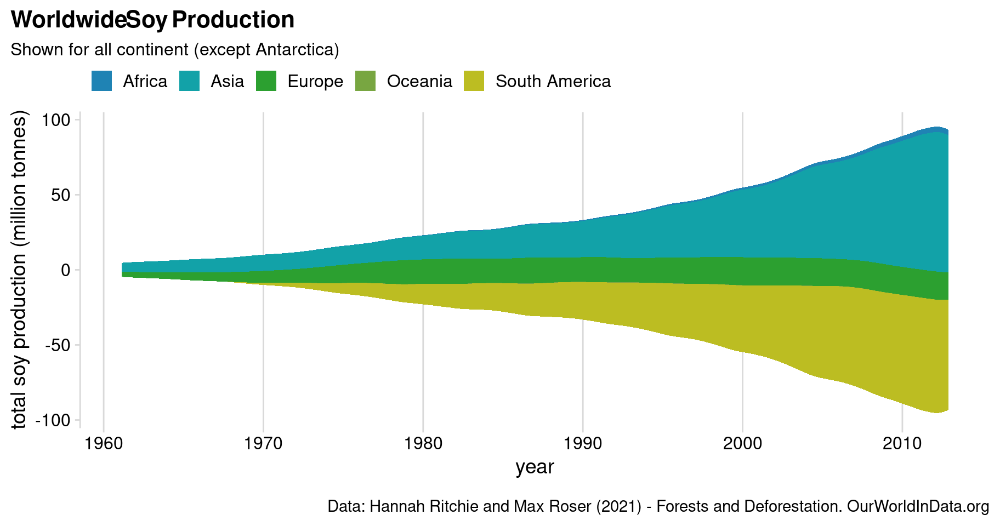

Deforestation
Tidy Tuesday
This is my first contribution to TidyTuesday, which is ‘a weekly podcast and community activity brought to you by the R4DS Online Learning Community’. Their goal is to help R learners learn in real-world contexts.
For more information, visit the TidyTuesday homepage or check out their GitHub repository.
Worldwide soy production over time
Streamgraph for soy production per continent:
The global production of soy has increased rapidly over the last 60 years. Europe’s share in global production is stagnating and stable since around 1980. Growth in soy production mainly stems from production increases in Asia and South America.
Interactive Streamgraph
Hover over graph to show cumulated soy production over all years (in million tonnes).
Brazilian Forest Loss
To get a picture of total forest loss next to forest loss and its causes, it is useful to again regard the corresponding streamgraph:
The graph shows that total forest loss between 2001 and 2004 is much higher than in more recent years. This corresponds to evolution of forest losses in other countries with increasing development. This trend however, could (temporarily) reverse in more recent years due to less regulatory restrictions. Pasture is the major cause of forest loss in Brazil. This is true over the whole time horizon. However, the share has been decreasing in recent years. Other causes, like fire, roads, or plantations including palm oil, play a much smaller - but also substantial - role.